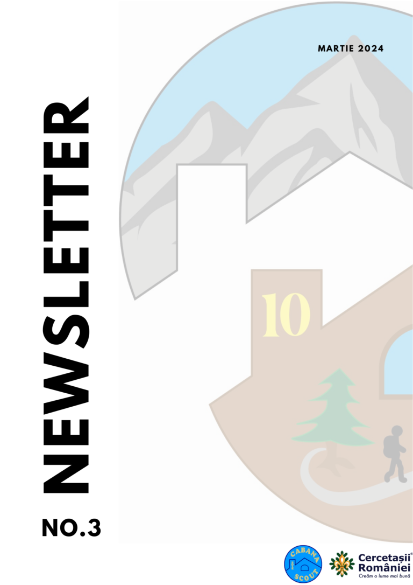
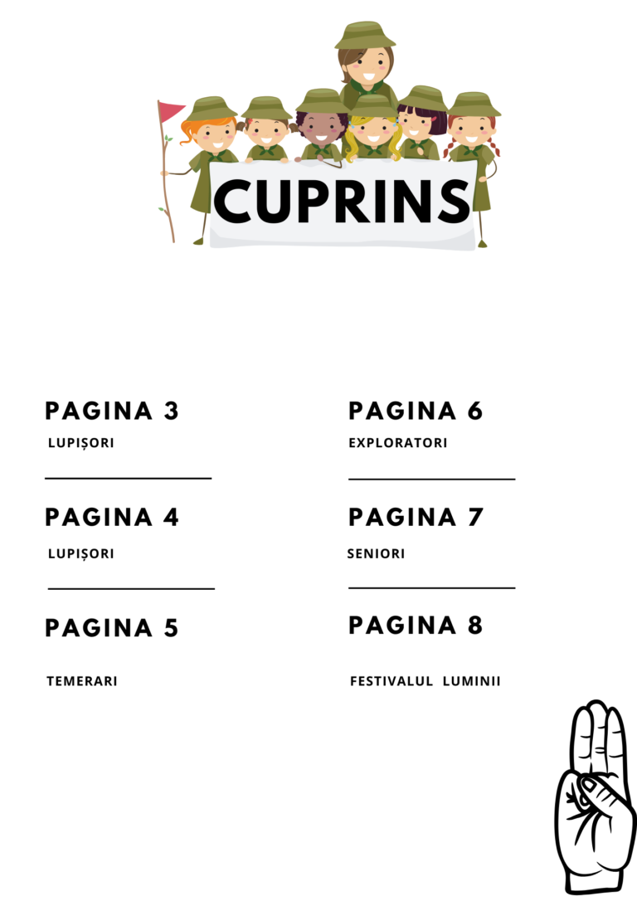
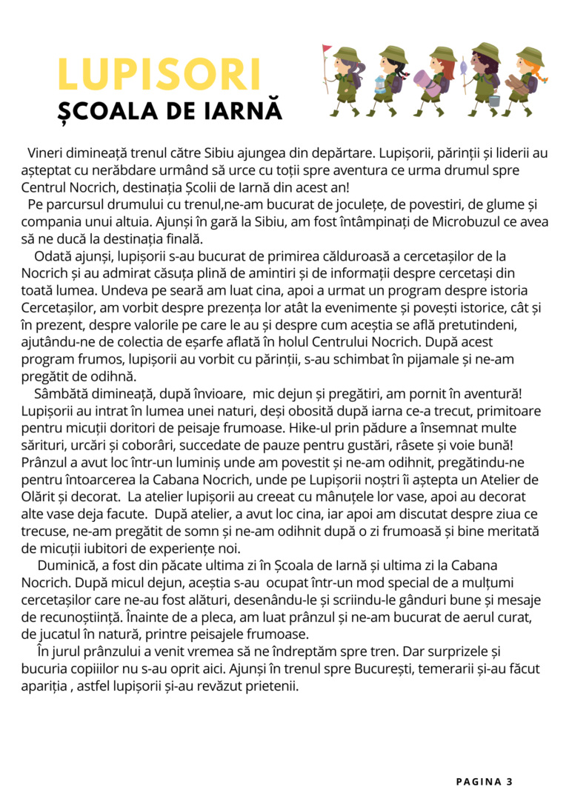
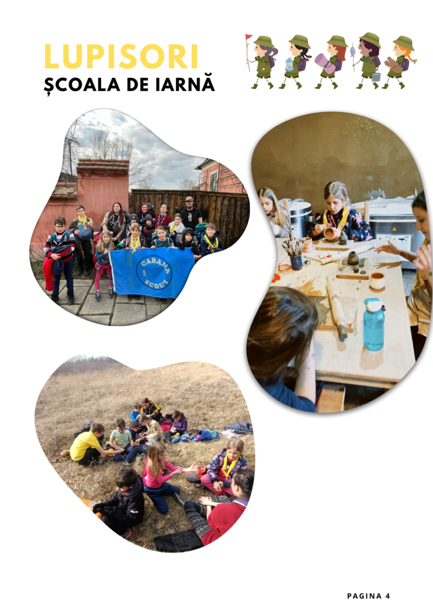
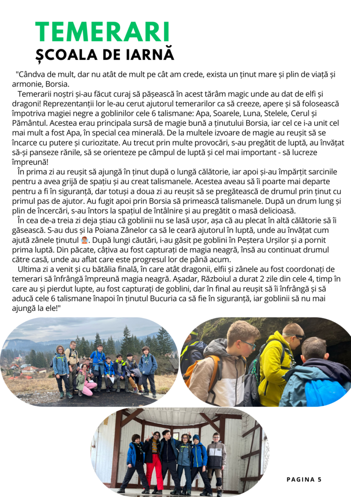
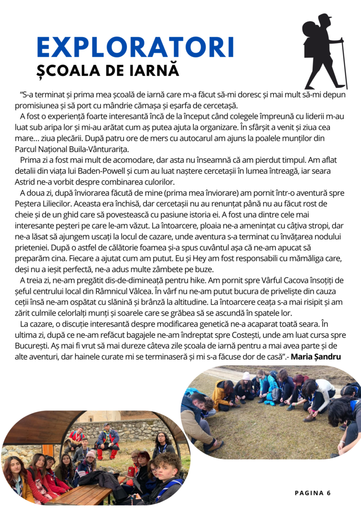
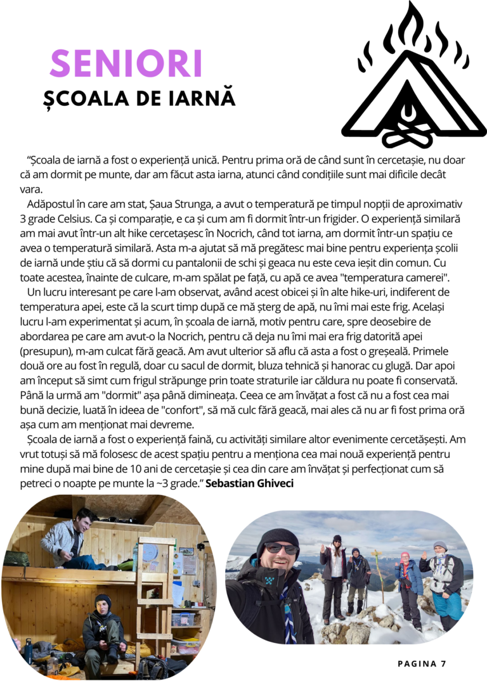
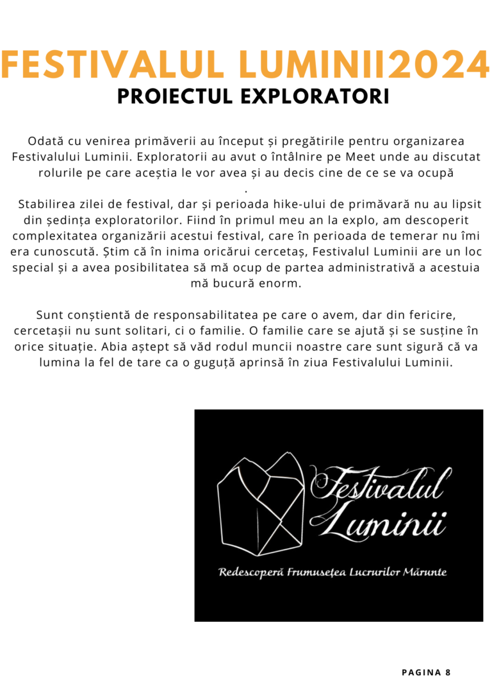

Revista Cabanei
Newsletterele centrului
Poveștile celor patru ramuri — lupișori, temerari, exploratori, seniori — adunate trimestrial în revista Cabanei. Citește-le aici sau descarcă PDF-ul.
„Foarte frumoase poveștile celor patru ramuri! La Temerari pare a fi mâna lui J.K. Rowling. Mulțumim — pentru organizare și pentru că ne țineți informați." — Traian T., părinte
Ediția #3 • martie 2024
Citește integral ediția #3
Derulează paginile ca într-o revistă adevărată.








